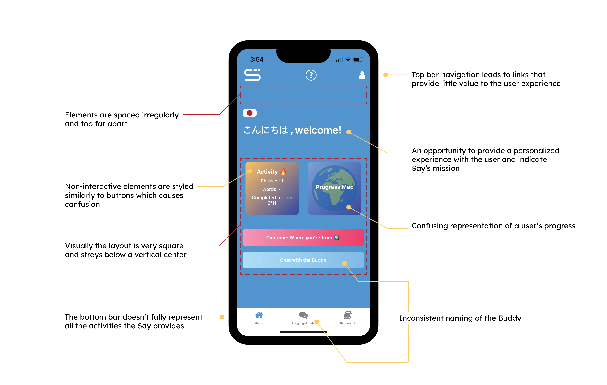
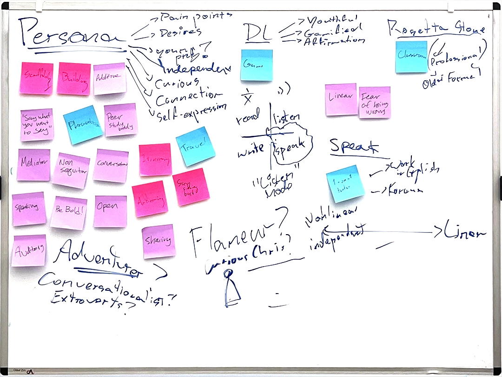
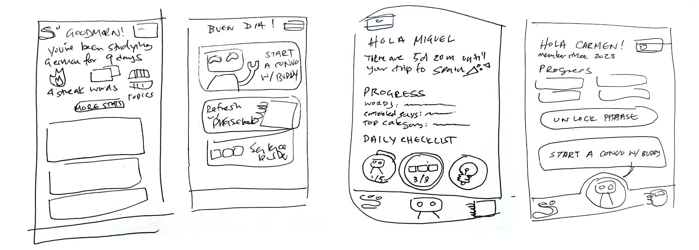

Say App Redesign
Overview
Say is a mobile application by Impulsa Co. that tackles language learning with a primary focus in speaking. Using AI, Say helps users build and practice phrases in another language to "say what they want to say" without having to learn theory.
Over the course of two weeks in July 2023, I was invited to identify their target user and restructure the flow of the app. My roles were mapping the user journey, conducting user research, and designing a new Home screen in preparation for their launch onto the App Store.
Preliminary Investigations
 To kick start the design sprint, I investigated what opportunities existed within the initial prototypes and shared my impressions and feedback to the design team. I also took note of actions and UI elements to observe in user interviews.
Additionally, I took some time with the founder to analyze Say’s competitors in the lenses of their target audiences, branding, voice, typical user journeys, and their offerings in learning tools with sticky notes.
Through these conversations , I identified three areas of growth that aligned with Say’s goals: how can the app inspire a daily rhythm without being prescriptive, how can we highlight Say’s ethos and identity, and how can we celebrate checkpoints in the user’s journey? These would be my guiding questions as I proceeded with the sprint.
Meeting the Target User
We invited a volunteer to perform user testing and speak their impressions, actions, and frustrations. The volunteer was selected from a pool of people who areenthusiastic to learn languages for travel. I observed the volunteer's journey without providing instruction. We closed up the interview by asking the volunteer what elements of language learning were fulfilling, their biases towards AI, and what they would change.
Analyzing the Data
Lindsay
the Immersive VacationeerMotivators: To brush up on Spanish and go deeper with grammatical nuances and pronunciation. Also driven by challenges.
Desires: Wants a personalized experience where learning is based on her own pace and built upon a goal in mind (e.g. traveling somewhere, being able to discuss everyday concepts with her parents). Loves flashcards.
Pain Points: Dislikes linear systems. Feels limited in other language learning apps that don't explore advanced topics like politics.
Biases: Anticipates correction on pronunciation or conjugation of words. Believes that vocabulary is necessary to advance in a language. Skeptical of the depth of AI conversations.
Based on the walkthrough with our participant, I created a persona to empathize and understand the Say user's motivators, desires, pain points, and biases. As I embarked new improvements to the Home page, I cross referenced these observations in order to meet the expectations and needs for the Say power user.
Redesign
Prior to sketching, I researched layouts of existing personal tracking applications. In addition to competing language learning apps, I considered apps that measure personal growth such as activity trackers, games, horoscope apps, and banking. To offer a personalized experience, it is cruicial to design a space where users can reflect on their progress and accomplishments. After a round of reviews with the design team, I presented two options for the Home screen:
Option 1
- Addresses immediate graphic design issues.
- Prioritizes personalized user data such as day streaks, how many words and phrases they've learned, and their own name.
- Buttons are more descriptive and styled like physical buttons to increase learnability.
- Top Bar Navigation: Simplified to two actions that users would benefit from on all pages of the app – Language selection and Settings.
Option 2
Interactive!Iterated from Option 1, Option 2 advances in the usability and playfulness of the app.
- Personalization: In addition to user data and greetings, the Buttons reference previous app activity.
- Voice: With the Buddy acting as a peer, I emphasized the voice of the app as relaxed and casual.
- Non-linear Guidance: Introduction of daily challenges for consideration and educate new users what is possible.
- Bottom Navigation Bar: Creating quick access to the Sentence Builder – a unique activity in addition to the Buddy and Phrasebook.
- Animated interactions: Smoothing out and adding motion to elevate the experience